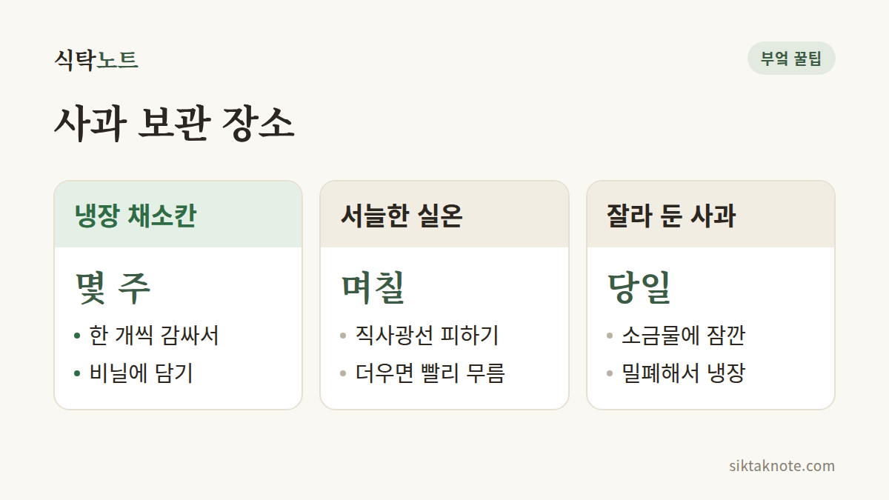

사과 오래 보관하는 법 — 냉장 보관과 갈변 막기

3줄 요약
- 사과는 한 개씩 키친타월이나 신문지로 감싸 비닐에 넣고, 냉장고 채소칸에 두면 좋습니다.
- 사과는 다른 과일을 빨리 익히는 가스를 내니, 바나나나 키위와는 떨어뜨려 두는 게 좋아요.
- 잘라 둔 사과는 소금물에 잠깐 담갔다가 물기를 닦아 밀폐 보관하고, 곰팡이가 핀 사과는 버려야 합니다.

오래 두고 먹을 사과는 냉장고로
사과를 한 박스 받아 놓고 며칠 뒤에 열어 봤더니 몇 알이 벌써 물렁해져 있을 때가 있죠. 그럴 땐 사 온 날 상태를 한 번 살펴보고 나눠 두는 게 좋습니다. 바로 먹을 건 실온에, 두고 먹을 건 냉장고로 보내면 돼요.
냉장고로 갈 사과는 이렇게 준비합니다.
- 멍이 들었거나 껍질이 상한 사과는 먼저 골라내요. 한 개가 상하면 옆의 사과도 빨리 상하거든요.
- 흙이나 먼지가 묻어 있으면 마른 천으로 닦습니다. 물로 씻는 건 먹기 직전에 해요.
- 한 개씩 키친타월이나 신문지로 감싸요.
- 비닐봉지나 지퍼백에 담되, 입구는 완전히 막지 말고 조금 열어 두세요.
- 냉장고 채소칸에 넣습니다.
농촌진흥청 자료에는 사과가 0도 안팎의 온도와 90~95%의 높은 습도에서 잘 보관된다고 나와 있는데요. 가정 냉장고에서 이 조건에 가장 가까운 곳이 채소칸입니다. 비닐에 담는 건 습기를 지켜 주기 위해서고, 습도가 모자라면 사과가 쭈글쭈글해져요.

며칠 안에 먹을 사과는 실온에서
서늘하고 그늘진 곳이면 며칠은 괜찮아요. 다만 날이 더우면 금방 물렁해지고 쭈글쭈글해지니, 가을이라도 햇볕이 드는 창가는 피하시는 게 좋습니다. 사과는 실온에 두면 냉장고에 둘 때보다 6~10배 빨리 익는다고 알려져 있습니다. 그래서 실온에는 며칠 안에 먹을 만큼만 꺼내 두세요.

자르고 나면 갈색으로 변하는 사과
사과를 자르면 공기에 닿은 부분이 갈색으로 변하는데요. 맛과 안전에는 큰 문제가 없지만, 보기에는 영 아쉽죠. 사과 속 효소가 공기 속 산소와 만나면서 생기는 반응이라서, 이럴 땐 소금물이 도움이 됩니다. 물은 공기를 막아 주고, 소금은 효소가 일하는 속도를 늦춰 주거든요.
- 찬물에 소금을 아주 조금 풀어요. 맛을 보아 짠맛이 거의 느껴지지 않을 정도면 됩니다.
- 자른 사과를 몇 분 담갔다가 건져요.
- 짠맛이 걱정되면 맹물에 한 번 헹굽니다.
- 물기를 닦아서 밀폐 용기에 담아 냉장해요.
소금 대신 찬물에 레몬즙을 한 숟가락 풀어도 같은 역할을 합니다. 이렇게 해 두어도 잘라 둔 사과는 그날 안에 드시는 게 좋습니다.
사과 곁에 두면 같이 익어 버리는 과일들
사과는 익으면서 에틸렌이라는 가스를 내요. 이 가스가 주변의 과일과 채소를 더 빨리 익게 만들거든요. 그래서 바나나, 키위, 배처럼 한창 익어 가는 과일 옆에 두면 다 같이 빨리 무릅니다. 바나나를 천천히 익히는 법은 바나나 보관법에도 적어 두었습니다.
채소도 영향을 받는데요. 당근, 오이, 브로콜리처럼 에틸렌에 민감한 채소는 사과와 따로 두라고 농촌진흥청 자료에도 나와 있습니다. 냉장고 채소칸에 사과를 넣을 땐 채소와 칸을 나눠 주세요. 양배추도 에틸렌에 민감해서, 양배추 보관법에서도 같은 이야기를 했어요.
냉장고가 도움이 되는 건 온도가 낮아서 사과가 익는 속도를 늦춰 주기 때문입니다. 키친타월로 감싸는 건 사과끼리 닿아 멍드는 걸 막고, 남는 물기를 흡수하게 하려는 거고요.
이런 사과는 아깝지만 보내 주세요
물렁하게 무르고 시큼한 발효 냄새가 나거나 곰팡이가 폈다면 버리는 게 안전합니다. 곰팡이가 핀 사과를 일부만 도려내 먹는 건 권하지 않아요. 비닐을 꽉 묶어 두는 것도 피하시는 게 좋습니다. 안에 물기가 차서 더 빨리 상하거든요.
한편 껍질에 하얀 가루 같은 막이 보여도 놀라지 않으셔도 됩니다. 사과가 스스로 만든 것인 경우가 많으니, 먹기 전에 씻으면 돼요.
물렁해진 사과는 이렇게 씁니다
푹 익어 물렁해졌어도 곰팡이가 없고 발효 냄새도 나지 않는다면 버릴 필요는 없어요. 껍질을 깎아 조림이나 잼, 구운 사과로 익혀 먹으면 됩니다. 사과를 박스째 두었다면 일주일에 한 번쯤 꺼내 눌러 보고, 물러지기 시작한 것부터 먼저 쓰세요.
이럴 땐 어떻게 해요?
냉장고에서 꺼낸 사과가 끈적해요. 사과가 껍질을 지키려고 스스로 만든 막일 수 있습니다. 먹기 전에 흐르는 물에 씻어 드세요.
김치냉장고에 넣어도 돼요? 설정 온도가 0도 안팎이라면 사과에도 알맞습니다. 제품마다 온도가 다르니 설명서를 한 번 확인하세요.
올가을 사과, 끝까지 아삭하게 즐기시길 바랍니다.